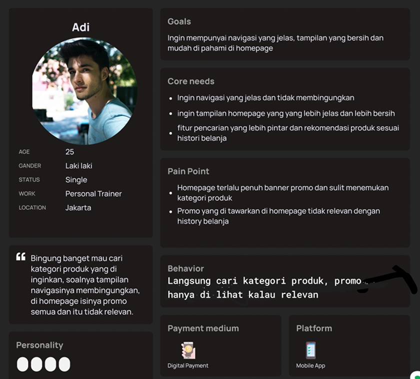
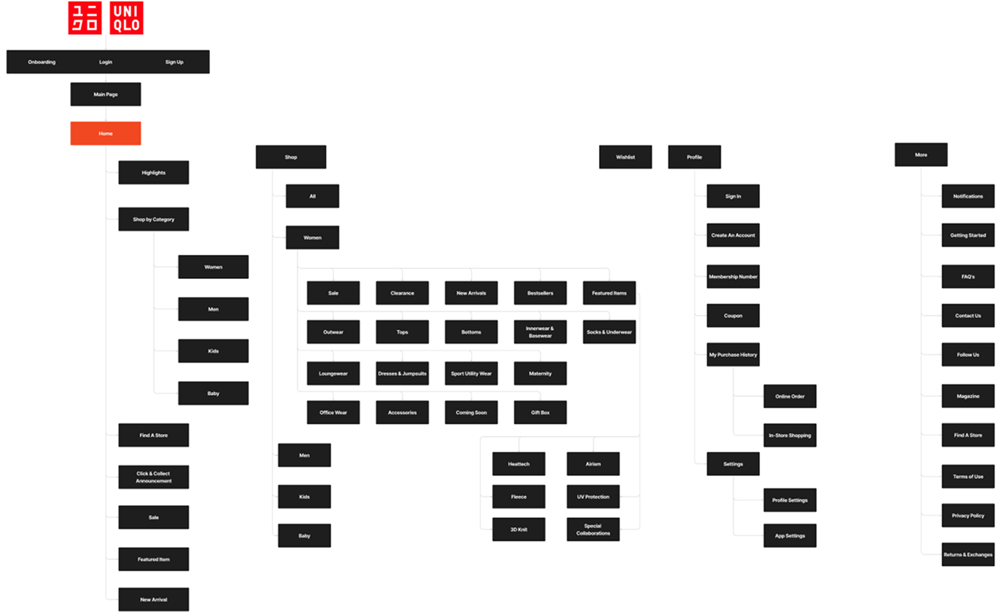
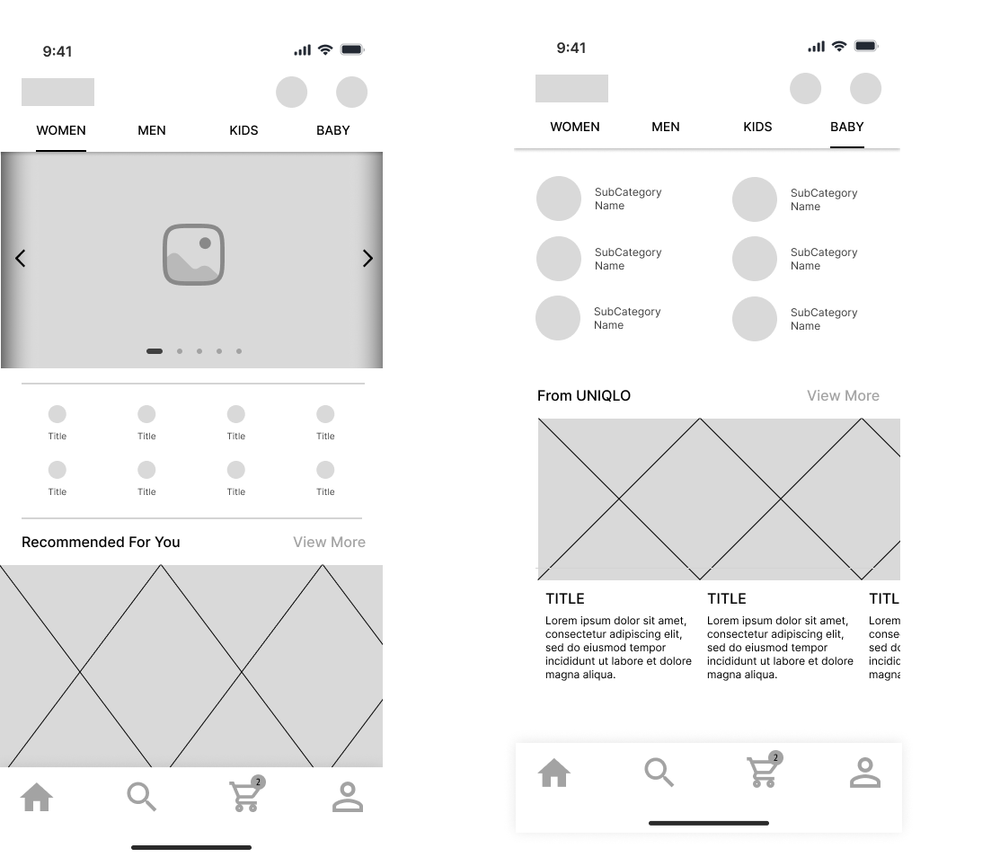
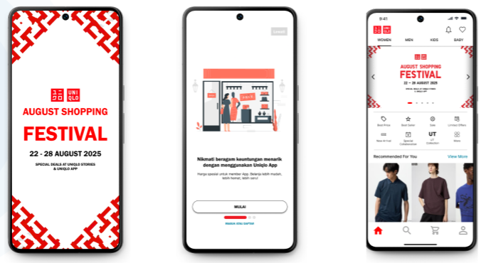

Konteks: Proyek ini untuk Revamp App Uniqlo bersama rekan tim MySkill
Masalah: Masih ada kekurangan pada aplikasinya terutama pada bagian homepagenya yang membuat user khususnya user baru merasa kebingungan pada saat menggunakan apk nya, dengan adanya kekurangan ini menyebabkan user tidak puas atau tidak betah untuk menggunakan aplikasinya sampai menghapus apk tersebut
Tujuan: Meningkatkan kemudahan pengguna untuk mencari barang yang ia ingingkan atau hanya sekedar lihat lihat saja, dengan memberikan tampilan antarmuka seperti icon, navigasi, dan visual yang lebih sederhana, jelas dan menarik.
Kami melakukan wawancara dengan 1 orang personal trainer yang menggunakan App Uniqlo. Dari riset ini, kami membuat User Persona:



Pendekatan Visual (UI): Dengan desain yang lebih intuitif, navigasi yang jelas, dan tampilan visual yang lebih ramah, aplikasi Uniqlo punya peluang besar untuk meningkatkan kepuasan user sekaligus menjadi contoh baru dalam pengalaman belanja fashion online yang mudah dan nyaman.Dengan desain yang lebih intuitif, navigasi yang jelas, dan tampilan visual yang lebih ramah, aplikasi Uniqlo punya peluang besar untuk meningkatkan kepuasan user sekaligus menjadi contoh baru dalam pengalaman belanja fashion online yang mudah dan nyaman.

Hasil: Revamp aplikasi Uniqlo bukan hanya soal mengubah tampilan, tapi bagaimana menghadirkan pengalaman belanja digital yang lebih nyaman dan membuat user merasa terhubung. User menginginkan homepage yang simple, rapi, dan mudah dimengerti, tempat yang enak dipakai sekaligus menyenangkan untuk dijelajahi.
Pembelajaran (Learning): Melalui proyek ini, kami belajar bahwa homepage yang penuh dengan promo besar dan ikon yang sulit ditemukan justru membuat user bingung, menurunkan rasa percaya diri saat belanja, bahkan bisa membuat mereka beralih ke aplikasi lain. Ini menunjukkan bahwa perubahan bukan lagi sekadar opsi, tapi kebutuhan penting.